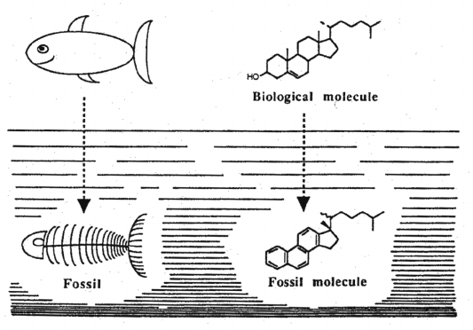
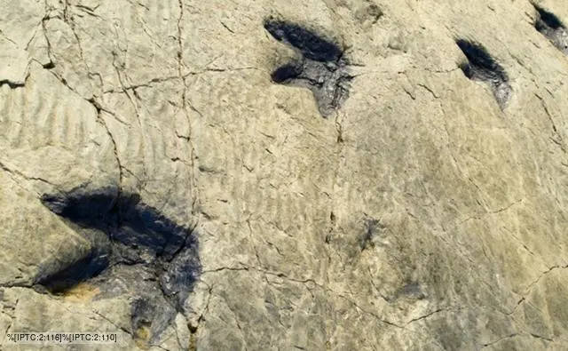
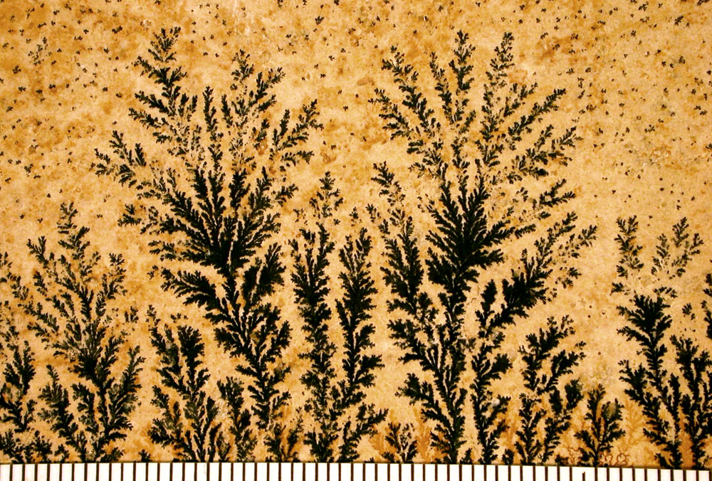

Hey there, fellow explorer! Have you ever held a rock in your hand and wondered about the stories it might tell? Imagine holding a piece of history, a fragment of a time when mammoths roamed and ferns were the size of trees. Fossils are our window into the past, a tangible connection to life’s grand tapestry that spanned millions of years.
They’re not just old bones; they’re storytellers, narrating tales of ancient worlds and forgotten creatures. Ready to embark on this journey through time? Let’s get started!
At its core, a fossil is a remnant or trace of an organism from the past, preserved in the Earth’s crust. It’s like nature’s photograph, capturing a moment from eons ago.
These are the classics. When you think of a dinosaur fossil, bone or a petrified shell, you’re thinking of body fossils. They’re actual parts of the organism, like bones, teeth, or shells, that have been preserved.

Going a bit more high-tech here. Molecular fossils, or biomarkers, are organic molecules that provide clues about ancient organisms. They might not look as cool as a T-Rex skull, but they’re invaluable for understanding ancient life at the molecular level.
Instead of the organism itself, trace fossils are records of its activity. Think footprints, burrows, or even poop (yes, fossilized poop is a thing, and it’s called coprolite!).
These are like silhouettes of ancient plants and soft-bodied creatures. They form when the organism decays, leaving behind a thin layer of carbon that creates a detailed imprint on rock.

The imposters of the fossil world! They look like fossils but are actually formed by geological processes, not biological ones. So, that “fossil” that looks like a leaf might just be a play of minerals.
The creation of a fossil is a masterpiece millions of years in the making. It’s a dance of elements, time, and a bit of luck: